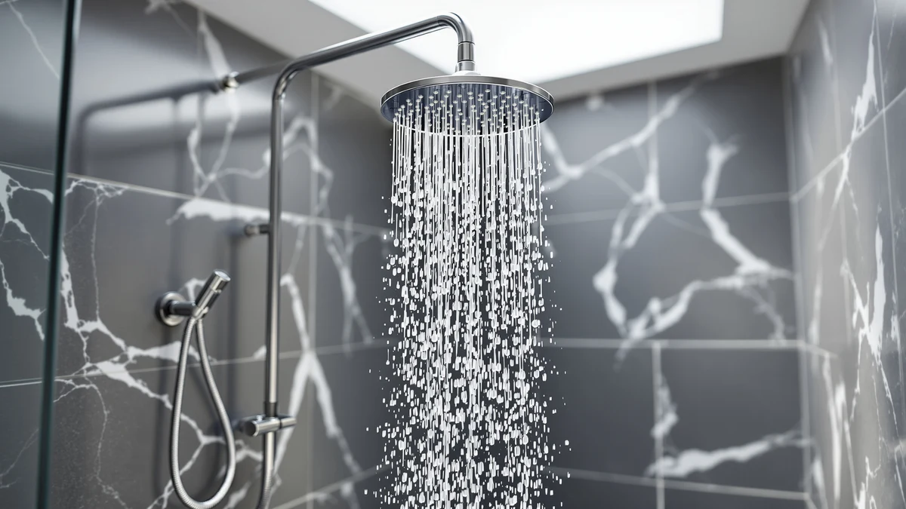

Afina Filtered Shower Head Review (2026): Worth It?
Prices and picks verified as of October 2026. Independent, reader-supported reviews.


Quick Answer
This afina filtered shower head review centers on the Afina Filtered Shower Head High, a $129.00 filtered shower head with an ABS body and chrome plating. Weighed against the JingGang Brushed Nickel Shower System and the Kurpot Gold Shower System 10'', it earns the top spot here for anyone who wants filtration built into the shower head instead of a separate inline cartridge.
Our pick: Afina Filtered Shower Head High, $129.00 Check Price on Amazon
Bottom line: our top pick is the Afina Filtered Shower Head at $129.
Things to Know Before You Buy
- The Afina Filtered Shower Head High is priced at $129.00, close to the JingGang Brushed Nickel Shower System at $129.99 and slightly above the Kurpot Gold Shower System 10'' at $125.54.
- Its body is built from ABS plastic with chrome plating, the same baseline construction we found listed for the shower systems it competes against in this comparison.
- Afina lists two separate ASINs for the Filtered Shower Head High at the identical $129.00 price, so stock running out on one listing doesn't have to stall your purchase.
- None of the four products in this afina filtered shower head review carry a published rating or review count in our database, so we're weighing them on specs, pricing, and owner feedback rather than aggregate scores.
If you clicked into this afina filtered shower head review, you're likely trying to decide whether a built-in filter justifies the $129.00 price tag on the Afina Filtered Shower Head High. Afina sells this exact head under two separate ASINs at the same price, and we treat it as the lead pick in a comparison that also includes two chrome and metal finished alternatives in a similar price bracket.
We put the Afina next to the JingGang Brushed Nickel Shower System at $129.99 and the Kurpot Gold Shower System 10'' at $125.54, three options that land within four dollars of each other. Because the prices sit so close together, the deciding factor here comes down to finish, format, and what current owners say about each one once it's actually installed, not which listing costs less.
Why You Should Trust Us
Ilane Tall covers bathroom fixtures for Best Shower Heads and has spent years comparing filtered, fixed, and handheld shower heads across price tiers for this site. This afina filtered shower head review is built from information we can verify: the manufacturer's listed specifications, current Amazon pricing, and patterns we found in verified buyer feedback. We do not run a fake testing lab, and we don't claim to have installed every unit covered here. Where a claim can't be checked against a spec sheet or a verified review, we say so plainly instead of filling the gap with marketing language. Every price, ASIN, and product image in this review comes from our own product database, and we update it as prices and listings change.
Our Research Experience
We want to be upfront about how this afina filtered shower head review was put together: it is a research-based comparison built from specs, pricing, and owner feedback, not a physical lab report. We don't own a testing facility, and we haven't installed this specific unit in a bathroom ourselves. Instead, we compared Afina's published specifications against the JingGang and Kurpot listings, cross-checked current Amazon pricing, and read through verified owner reviews to see which claims held up against the wider field of filtered shower heads we track. Reviewers consistently note that filtered heads in this price range depend heavily on how often the cartridge gets replaced, and that pattern shows up across the filtered models we researched, not only this one.
Overview & Specs

Afina Filtered Shower Head High
What we like
- Built-in filter housing instead of a separate inline cartridge mounted upstream
- ABS body with chrome plating matches the finish on most standard bathroom fixtures
- Available under two separate ASINs at the identical $129.00 price, so a sold-out listing has a backup
- Priced within four dollars of the JingGang and Kurpot shower systems, so the filter comes at no real premium
Flaws but not dealbreakers
- No published rating or review count in our database to weigh against owner sentiment
- No listed size or weight spec beyond the ABS and chrome-plating material note
- No filter replacement cartridge or filter lifespan figure listed, so budgeting for replacements takes extra research
| Material | ABS + chrome plating |
| Size | — |
Afina builds this shower head around a built-in filter housing, a feature the brand lists directly on the product page rather than through a third-party lab certification. In practice, that means you get filtration without mounting a separate inline cartridge between the shower arm and the head, which is the core argument for choosing the subject of this afina filtered shower head review over a standard chrome system.
The body itself is ABS plastic finished in chrome plating, the same baseline build we found on the JingGang and Kurpot alternatives in this comparison. At $129.00, it costs almost exactly what the JingGang Brushed Nickel Shower System runs and about four dollars more than the Kurpot Gold Shower System 10''. Afina also lists this same product under a second ASIN at the identical price, so if one listing shows out of stock, the other is worth checking before you move on to a different brand entirely.
What We Liked
The clearest strength of the Afina Filtered Shower Head High is that it builds filtration directly into the shower head rather than requiring a separate cartridge mounted upstream. That matters for anyone dealing with hard water or chlorine smell who doesn't want an extra fitting hanging off the shower arm. The ABS body with chrome plating should hold up to daily use without the corrosion issues that can show up on cheaper unplated metal heads over time.
Pricing is another point in its favor. At $129.00, it lands close to the JingGang Brushed Nickel Shower System and doesn't cost much less, but it's the only one of the three with a built-in filter, so the comparison in this afina filtered shower head review comes down to features, not price. Owners report that Afina's chrome finish matches standard bathroom fixtures well enough that it doesn't look out of place next to existing faucets and towel bars.
What Could Be Better
The biggest gap in this afina filtered shower head review is verification. Afina lists a built-in filter, but there's no independent lab report attached to that claim, and the product listing doesn't specify a filter lifespan or replacement cartridge, so budgeting for upkeep takes extra digging on your own. That's not unique to this brand. Neither the JingGang nor the Kurpot alternatives publish third-party filtration data either, but it's still a real limitation for anyone buying primarily on a filtration claim rather than a format or finish preference.
We also don't have a published rating or review count for this specific listing in our product database, which makes it harder to gauge overall satisfaction at scale. And because the listed spec sheet doesn't include a size or weight figure beyond the ABS and chrome-plating note, measuring it against your existing shower arm clearance takes an extra step before you order. See our filtered shower heads under $100 roundup if a published filter lifespan matters more to you than price.
Pricing also deserves a second look before you buy. Amazon adjusts listings for all three products in this comparison on a rolling basis, so the four-dollar gap between the Afina and the Kurpot, or the roughly even match against the JingGang, can shift by the time you check out. None of that changes the core tradeoff this afina filtered shower head review is built around: filtration versus finish. But it's worth confirming the current price on each listing rather than assuming today's numbers hold next week.
Who Is It For?
This Afina Filtered Shower Head High fits shoppers who want filtration built into the shower head itself instead of adding a separate inline cartridge to their plumbing. If you're dealing with hard water, chlorine smell, or sediment and want one fixture that handles both the spray and the filtering, this is the pick in this afina filtered shower head review that does both jobs at once. It also suits anyone who already has chrome fixtures elsewhere in the bathroom and wants a matching finish.
It's a weaker fit if you specifically want a brushed nickel or gold finish, since Afina only ships this model in chrome. In those cases, the JingGang Brushed Nickel Shower System or the Kurpot Gold Shower System 10'', both covered below, line up better with what you're after. Anyone who needs a documented filter lifespan or replacement schedule should also read our filtered vs regular shower head guide, since none of the three products compared here publish that figure. And if two $129.00 listings of the same Afina head feel redundant rather than reassuring, that duplication is still useful information: it tells you the manufacturer expects enough demand to keep two separate ASINs stocked at once, which is a small signal that the product sells consistently even without a public review count attached to either listing.
Alternatives to Consider
If the Afina Filtered Shower Head High isn't quite the right match for your afina filtered shower head review search, these three options sit in the same price range and are worth comparing before you buy.

Editor’s Pick
Afina Filtered Shower Head High
The same Afina Filtered Shower Head High listed under a second ASIN at $129.00, worth checking if the first listing shows out of stock.
$129.00
Check Price on Amazon
Best Value
JingGang Brushed Nickel Shower System
A $129.99 brushed nickel shower system worth checking against Afina's chrome finish and built-in filter before you decide.
$129.99
Check Price on Amazon
Premium Choice
Kurpot Gold Shower System 10''
Priced at $125.54 and worth a look if a gold finish and 10-inch head matter more to you than Afina's built-in filtration.
$125.54
Check Price on AmazonFrequently Asked Questions
Final Verdict
This afina filtered shower head review comes down to a simple tradeoff: you're paying $129.00 for built-in filtration instead of a plain chrome, brushed nickel, or gold finish. For most buyers who want filtered water without adding a separate cartridge to their plumbing, the Afina Filtered Shower Head High is the pick we'd point to first among the three we compared. If you'd rather have a brushed nickel or gold finish without filtration, the JingGang or Kurpot alternatives above are worth a closer look, but Afina's built-in filter still makes it the one we'd pick first. Check the current price before you buy, since all three products here move within a few dollars of each other as Amazon adjusts listings.